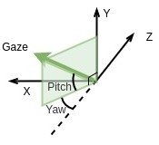
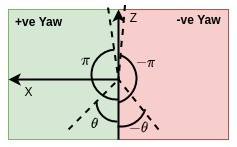
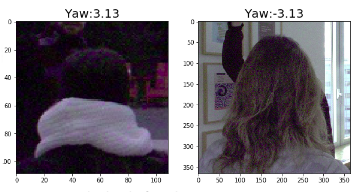
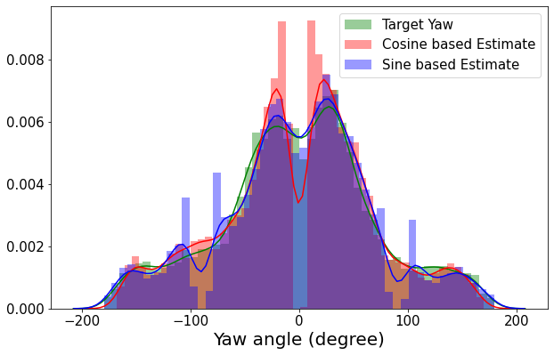
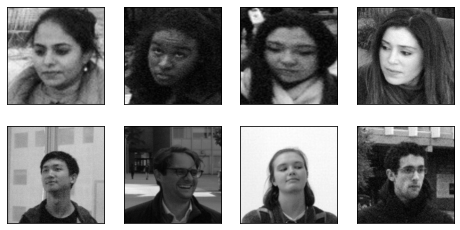
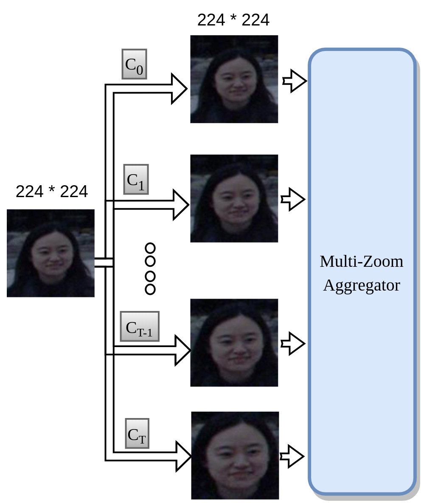
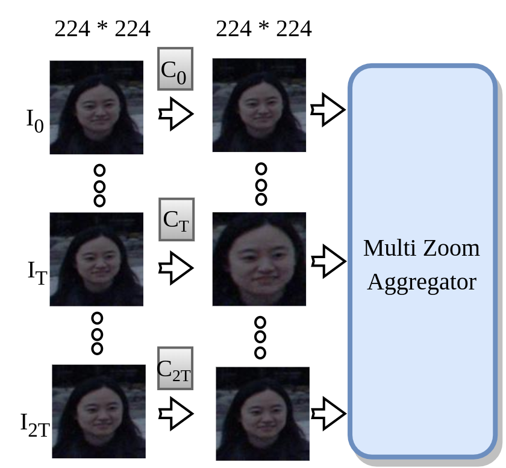
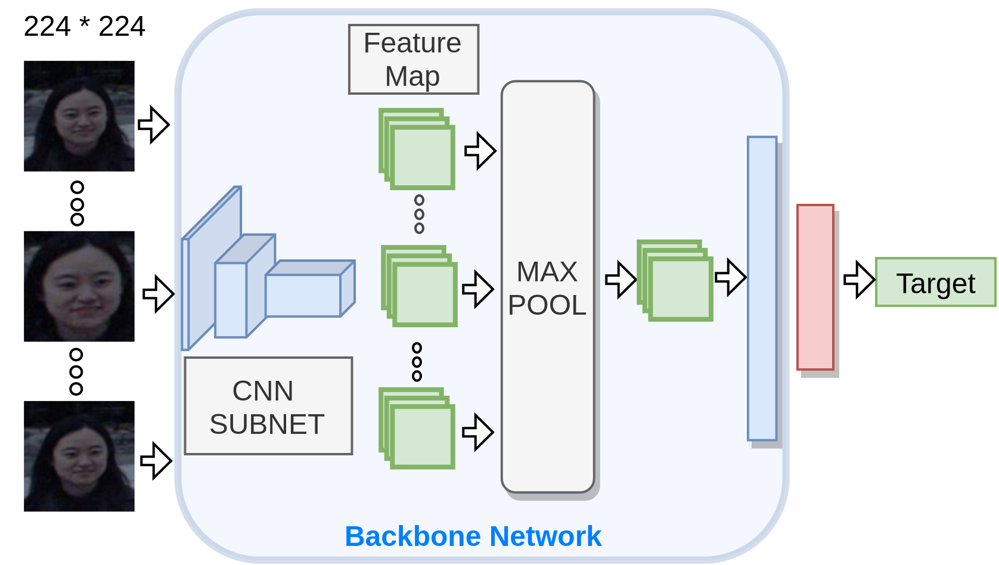

360-Degree Gaze Estimation in the Wild Using Multiple Zoom Scales
Super Short Introduction
- Paper Link
- This work of mine solves the problem of estimating gaze of a person in unconstrained environments - variable camera-person distance and full \[360^\circ\] variation in Yaw. Variable camera-person distance is handled via a multi-scale approach where features from multiple scales are aggregated. A full \[360^\circ\] variation in Yaw raises an interesting problem of predicting backward gazes which is improved upon by using a weighted sine-cosine transformation.
An Overview of the Methodology
Definitions:
- Yaw \[\theta\] and Pitch \[\phi\] angle: In polar co-ordinates a normalized 3D vector can be represented by 2 angles. Gaze vector is therefore represented by \[\theta\] (left right orientation) and \[\phi\] (top down orientation).

Sine-Cosine Transformation
Backward gaze induces discontinuity at \[\theta=\pm\pi\] as seen in figure below. Yaw angle is defined with respect to negative z axis. Discontinuity is seen when the projection of gaze vector on XZ plane is very close to positive Z direction. From one side the angle reaches \[\pi(3.14)\] and from the other, it reaches \[-\pi(-3.14)\].{kind=link}

{kind=link}

We solve the issue by applying sine-cosine transformation on target - we predict \[sin(\theta)\], \[cos(\theta)\] and \[sin(\phi)\].
It is easy to see that in sine-cosine space, there is no discontinuity at \[\theta=\pm\pi\]. We predict \[\theta\] from two ways. We estimate Sine-based estimate \[\theta_S\] by using predicted \[sin(\theta)\] and sign of \[cos(\theta)\]. We obtain Cosine-based estimate \[\theta_C\] by using predicted \[cos(\theta)\] and sign of \[\sin(\theta)\]. Our prediction for yaw is \[\theta_{SC} = (\theta_S + \theta_C\])/2
Weighted Sine-Cosine Transformation
We observe that \[\theta_C\] is not able to predict \[0^\circ\] and \[\theta_S\] is not able to predict \[\pm\pi/2\] as can be seen in below figure where we look at their distributions.
We argue that it is due to low derivative of \[tanh\] around \[\pm1\] and high derivative of \[sin^{-1}\] and \[cos{-1}\] around \[\pm\pi/2\] and \[0^\circ\] respectively. We fix this by using a weighted average scheme. Our final prediction for yaw,
\[\theta_{WSC} = w*sin(\theta) + (1-w)*cos(\theta)\]
Finally, we note that there is no ambiguity in estimating \[\phi\] from \[sin(\phi)\] since \[\phi \in [-\pi/2,\pi/2]\] ### Multi-Crop Approach We take this approach to do efficient feature extraction over varying head sizes appearing in the dataset as shown below.{kind=link}

{kind=link}

{kind=link}

{kind=link}
